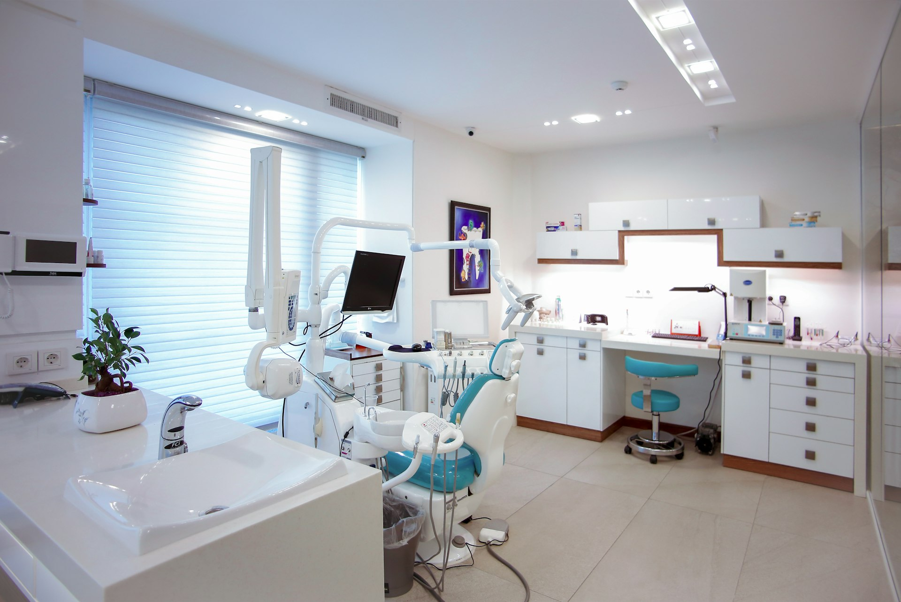
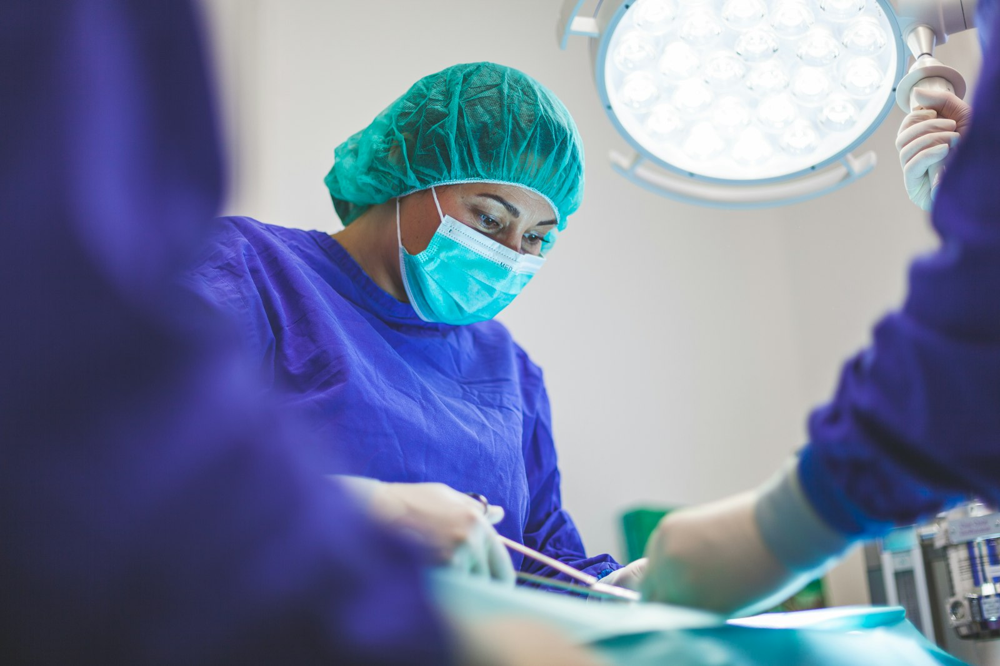
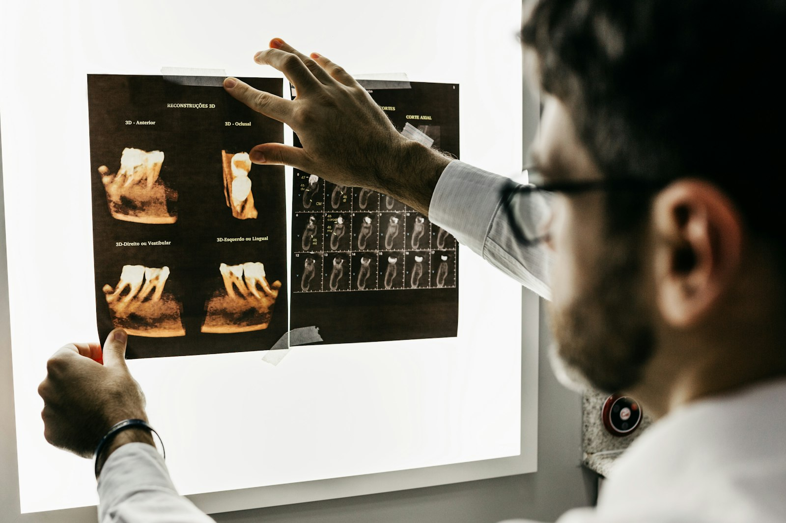
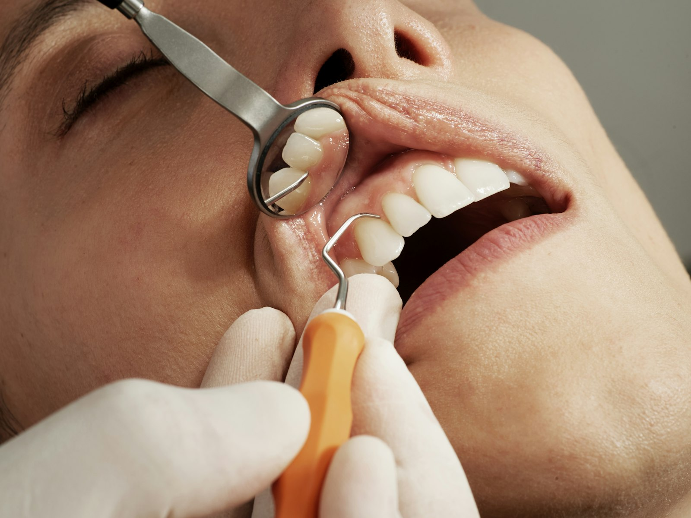
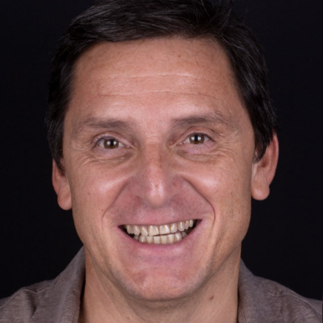
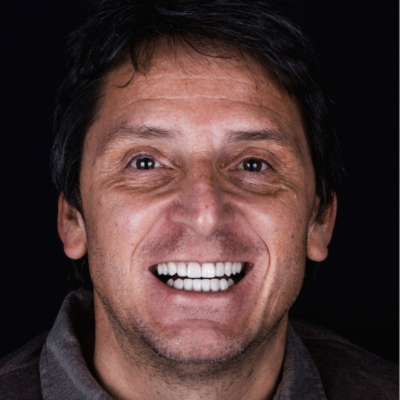
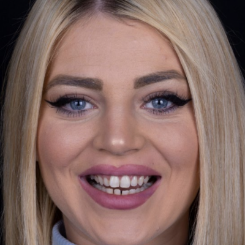
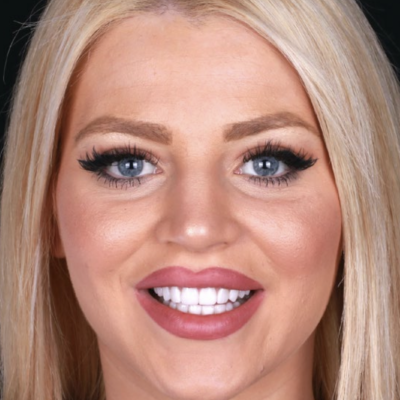
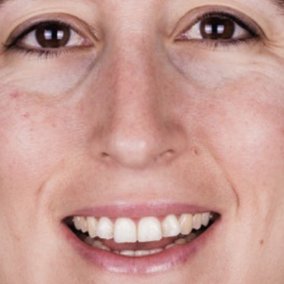

Implantes dentales
Recupera tus dientes perdidos (todos, varios o uno) con la rehabilitación dental más eficaz y duradera.
Ver tratamientoOdontología mínimamente invasiva con tecnología puntera y materiales biocompatibles libres de BPA. Cuidamos de tu salud y estética dental con un trato cercano y honesto.

Nuestra especialidad son las personas.
Llevamos más de 30 años haciendo un trabajo honesto, cualificado y con tecnología puntera en continua actualización. Practicamos una Odontología Mínimamente Invasiva ligada estrechamente a los materiales más respetuosos con los tejidos, elegidos cuidadosamente entre los libres de Bisfenol-A (BPA), cementos biocerámicos de regeneración y biomineralización, reparando tejidos que permiten la resolución de casos en que los materiales utilizados antiguamente no tenían buen pronóstico.
Recupera tus dientes perdidos (todos, varios o uno) con la rehabilitación dental más eficaz y duradera.
Ver tratamiento
Alineadores transparentes a medida que enderezan tu sonrisa con la máxima discreción.
Ver tratamiento
Armonía y belleza para tu sonrisa con carillas de porcelana o composite a medida.
Ver tratamiento
Extracciones, frenillos y procedimientos quirúrgicos en manos de nuestro equipo especialista.
Ver tratamientoOrtodoncia fija, metálica o estética, para mover tus dientes de forma precisa y controlada.
Ver tratamiento

Prevenimos y tratamos la enfermedad de las encías, primera causa de pérdida dental.
Ver tratamiento
Prevención y consejo para una mejor higiene bucal, desde los más peques.
Ver tratamientoQueremos que te sientas cómodo desde el primer momento. Así es como te acompañamos en tu primera cita.

Planifica tiempo suficiente para no sentirte apurado. Pregunta cuánto suele durar el procedimiento y añade un margen. No dudes en plantear cualquier pregunta a tu llegada.
Creamos tu ficha de paciente con un breve cuestionario de salud, bajo estrictas medidas de protección de datos, y realizamos un examen completo, verbal y exploratorio.
Detectamos lo que de otro modo pasaría desapercibido. Nuestros equipos de última generación emiten muy poca radiación y siempre usamos protectores.
Revisamos caries, encías, implantes, mordida y tejidos. Al final recibes un plan de tratamiento personalizado por escrito y su presupuesto, que aprobarás antes de empezar.
Casos reales de pacientes de nuestra clínica. Arrastra para descubrir la transformación.





No puedo más que decir cosas buenas. El trato, profesionalidad, cercanía, las instalaciones, divinas. He comenzado con mi tratamiento y no puedo estar más contento.
Profesionales de una calidez humana difícil de encontrar en el sector. Ejemplo de brillantez y honestidad. Muy buen servicio y atención. Clínica de calidad altamente recomendable.

Gran equipo de profesionales. Trato impecable, han acertado con todas las actuaciones que me han hecho, a destacar los implantes dentales, ni un solo problema. Esta clínica es garantía y seguridad. La recomiendo sin dudarlo.
La estética dental ha dejado de ser un lujo para convertirse en una parte esencial del bienestar.
Leer másLos implantes dentales no pueden entenderse sin hablar de salud ósea. El hueso es la base de todo.
Leer más
La ortodoncia no solo transforma la sonrisa, también puede mejorar funciones vitales.
Leer másReserva tu primera visita y recibe un plan de tratamiento personalizado por escrito, sin compromiso. Estamos en el centro de Irún.